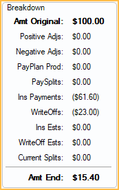

Select Procedure
The Select Procedure window is used throughout the Account Module to associate procedures to charges.
In the Edit Adjustment window, click Attach.

Alternatively, when attaching a procedure to a Paysplit, click Attach.
This window shows users outstanding charges along with a financial breakdown. Use this information when creating paysplits or adjustments to prevent procedures from being overpaid.
Production Filter

There are three options to filter the procedures.
- Only allocated production: Show all procedures that do not have enough attached credits (e.g., paysplits, adjustments) to cover the full cost of the procedure (i.e., procedures that have attached paysplits that only cover part of the cost).
- Include all production: Show all procedures that are not paid off using first in/first out logic. This logic applies when credits in a payment are not explicitly attached/allocated to procedures. Selected by default when the Adjustments preference in Allocations Setup is set to Manual.
- Exclude all production: Show all procedures on this patient's account regardless of attached credits.
Procedures

Shows all procedures for the patient matching the criteria of the selected Production Filter.
- Date: Procedure date.
- Prov: Treating provider.
- Code: Procedure code.
- Tooth: Tooth attached to the procedure.
- Description: Procedure code description. (TP) denotes a treatment planned procedure. Treatment planned procedures only show when attaching to a paysplit and the Allocations Setup, Allow prepayments to allocate to treatment planned procedures is checked.
- Amt Orig/Amt: Procedure fee. (e.g., billed fee or capitation fee)
- Amt End: Remaining procedure balance after all paysplits, adjustments, write-offs, and estimates have been applied (including the current adjustment or paysplit). This column is hidden when the Exclude all production filter is selected.
Breakdown
Highlight a procedure to see the financial breakdown.
- Amt Original: Procedure fee. (e.g., billed fee or capitation fee)
- Positive Adjs: Total of positive adjustments attached to the procedure.
- Negative Adjs: Total of negative adjustments attached to the procedure.
- PayPlan Prod: Total of Payment Plan Production attached to the procedure.
- PaySplits: Total of patient payments attached to the procedure.
- Ins Payments: Total of insurance payments attached to the procedure.
- WriteOffs: Received write-offs attached to the procedure.
- Ins Ests: Outstanding insurance estimate for claims created with the procedure.
- WriteOff Ests: Outstanding write-off estimate for claims created with the procedure.
- Current Splits: Total of other payment splits currently attached to the same payment.
- Amt End: Remaining procedure balance after all paysplits, adjustments, write-offs, and estimates have been applied.
Select Account Entries
The Select Account Entries window is nearly identical to the Select Procedure window. Multiple procedures can be selected from this window, unlike the Select Procedure window. When selecting multiple procedures, the Breakdown reflects totals for all selected procedures.
In the Account Module, click the Payment dropdown and Allocate Unearned. If the family has an Unearned / Prepayment balance, Select Account Entries is opened, and the Production Filter defaults to Only allocated production.
If Allow prepayments to allocate to treatment planned procedures is enabled in Allocations Setup, treatment planned procedure are included in the Procedures list. Select one or more production items and click OK or double-click a single item to Allocate Unearned Income.